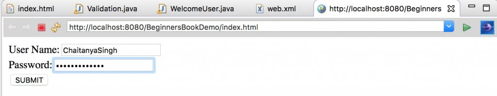
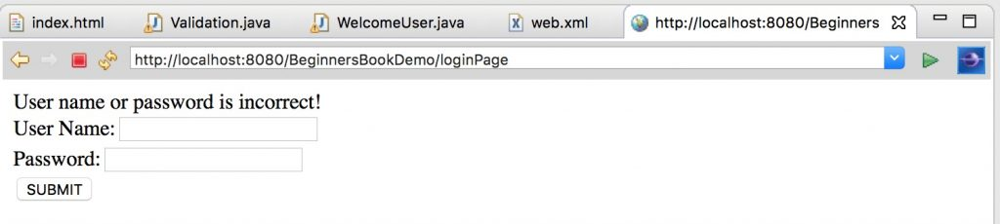
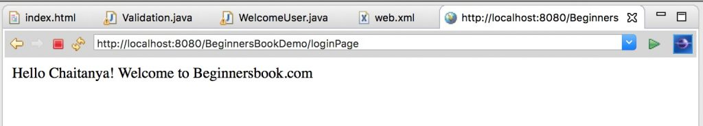

The RequestDispatcher interface defines an object that receives the request from client and dispatches it to the resource(such as servlet, JSP, HTML file). This interface has following two methods:
public void forward(ServletRequest request, ServletResponse response): It forwards the request from one servlet to another resource (such as servlet, JSP, HTML file).
public void include(ServletRequest request, ServletResponse response): It includes the content of the resource(such as servlet, JSP, HTML file) in the response.
Difference between forward() vs include() method
To understand the difference between these two methods, lets take an example: Suppose you have two pages X and Y. In page X you have an include tag, this means that the control will be in the page X till it encounters include tag, after that the control will be transferred to page Y. At the end of the processing of page Y, the control will return back to the page X starting just after the include tag and remain in X till the end.
In this case the final response to the client will be send by page X.
Now, we are taking the same example with forward. We have same pages X and Y. In page X, we have forward tag. In this case the control will be in page X till it encounters forward, after this the control will be transferred to page Y. The main difference here is that the control will not return back to X, it will be in page Y till the end of it.
In this case the final response to the client will be send by page Y.
Example:
In this example, I will be using both the methods include and forward. Using include method, I will be changing the content of current page and when I’m ready to transfer the control to the next page, I will use forward method.
index.html
<form action="loginPage" method="post"> User Name:<input type="text" name="uname"/><br/> Password:<input type="password" name="upass"/><br/> <input type="submit" value="SUBMIT"/> </form>
Validation.java
import java.io.*;
import java.io.*;
import javax.servlet.*;
import javax.servlet.http.*;
public class Validation extends HttpServlet
{
public void doPost(HttpServletRequest request,
HttpServletResponse response)
throws ServletException, IOException
{
response.setContentType("text/html");
PrintWriter pwriter = response.getWriter();
String name=request.getParameter("uname");
String pass=request.getParameter("upass");
if(name.equals("Chaitanya") &&
pass.equals("beginnersbook"))
{
RequestDispatcher dis=request.getRequestDispatcher("welcome");
dis.forward(request, response);
}
else
{
pwriter.print("User name or password is incorrect!");
RequestDispatcher dis=request.getRequestDispatcher("index.html");
dis.include(request, response);
}
}
}
WelcomeUser.java
import java.io.*;
import javax.servlet.*;
import javax.servlet.http.*;
public class WelcomeUser extends HttpServlet {
public void doPost(HttpServletRequest request,
HttpServletResponse response)
throws ServletException, IOException
{
response.setContentType("text/html");
PrintWriter pwriter = response.getWriter();
String name=request.getParameter("uname");
pwriter.print("Hello "+name+"!");
pwriter.print(" Welcome to Beginnersbook.com");
}
}
web.xml
<web-app> <display-name>BeginnersBookDemo</display-name> <welcome-file-list> <welcome-file>index.html</welcome-file> </welcome-file-list> <servlet> <servlet-name>Login</servlet-name> <servlet-class>Validation</servlet-class> </servlet> <servlet> <servlet-name>Welcome</servlet-name> <servlet-class>WelcomeUser</servlet-class> </servlet> <servlet-mapping> <servlet-name>Login</servlet-name> <url-pattern>/loginPage</url-pattern> </servlet-mapping> <servlet-mapping> <servlet-name>Welcome</servlet-name> <url-pattern>/welcome</url-pattern> </servlet-mapping> <welcome-file-list> <welcome-file>index.html</welcome-file> </welcome-file-list> </web-app>
Output:
Entering wrong credentials:

Error screen:

Welcome screen on entering correct user name and password:

Leave a Reply